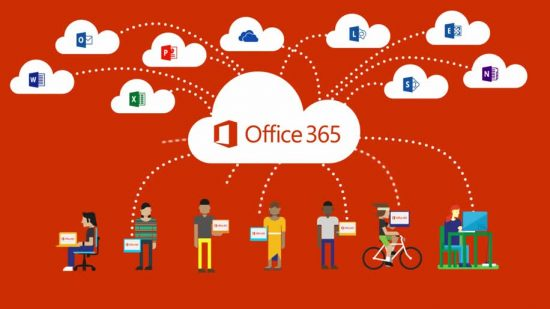

Modern Collaboration with Microsoft OneDrive, SharePoint, and Teams!
I’ve recently worked a lot with the Microsoft Cloud, specifically around productivity and Modern Collaboration. I decided to start a series of posts, and this is the second post in the series of at least four blog posts. If you haven’t read the first post in the series, I strongly encourage you to start with “What is Modern Collaboration, and how does it impact business?”
The Microsoft Cloud is exceptionally vast in the number of products available. We are going to focus on the Office 365 segment of the Microsoft Cloud. Now, you will see the branding Microsoft 365 occasionally also, Microsoft 365 is a product line that includes Office 365, along with Windows licensing, and other subscription products for security and managing computers and mobile devices. Recently, Microsoft started using the Microsoft 365 branding for some small business and consumer subscription services. This article will not cover any of the consumer subscriptions. However, it is still applicable to the small business plans.
When thinking about Office 365, you need to understand that it is similar to Microsoft Office. When you purchase Microsoft Office, you get multiple pieces of software that install together as a suite of products. Office 365 is very similar. You are buying a subscription, and you get more than one product with that subscription.
Most businesses that invested in Office 365 did so to get rid of their Exchange Servers and to use Exchange Online for email. I’ve worked with Office 365 for nearly a decade. During this time, when I was a consultant, companies were purchasing Office 365 exclusively for Exchange Online. They didn’t care about any of the other components, other than it having the installable version of Microsoft Office depending upon their plan.
In addition to Exchange Online, Office 365 includes Microsoft Teams, SharePoint, Yammer, OneDrive for Business, Microsoft Delve, Microsoft Stream, Microsoft Sway, Power Apps, Power Automate, Microsoft Forms, Microsoft Planner, and Microsoft To Do.

In this blog post, we will focus on OneDrive for Business, SharePoint, and Microsoft Teams. If you are interested in learning more about the other products that come with Office 365, feel free to browse my blog! I’ve written articles on Microsoft Forms, Microsoft Planner, Microsoft To Do, and Power Automate as of writing this post.
The first product in the Office 365 suite we will discuss is OneDrive for Business. OneDrive for Business is what is available to the Office 365 subscriptions. OneDrive for Business is a private storage per-employee. The private storage gives them space to store documents they are working on that are not ready to share with co-workers. Keep in mind the storage is in a business account, so if there is litigation or the business wants to access the files - they are private storage, not personal storage. The business still owns the data and can access it at any time. Even though OneDrive for Business is private storage, it is simple to share files with anyone you choose to share in just a few clicks.
OneDrive is web-based file storage. There is a OneDrive app built into Windows 10 that can sync the web files to your computer and save them locally. Syncing your files makes accessing them feel like they are all local and ease the transition to using web-based storage. There is also a OneDrive app for mobile devices that can access all of your files from anywhere. Ultimately OneDrive for Business makes your files accessible from anywhere, anytime on any device.
The second product in the Office 365 suite we will discuss is SharePoint Online. SharePoint Online as a product is massive. It is a web framework for building applications, storing files, creating lists, and creating internal websites. For this blog series, we will focus on Document Libraries for storing files and collaborating with team members on those files. If you have a business case for the other features in SharePoint Online, I strongly encourage you to test with it; it has tremendous power that would take an entire blog series to cover.
The final product in the Office 365 suite we will discuss is Microsoft Teams. Microsoft Teams is probably one of the newest products that are a part of the Office 365 suite. Initially launched in March of 2017, it was fundamentally a basic chat application with the capability to IM, Video chat, and integrate apps for other products in the Office 365 suite and some third-party apps.
Since it’s original launch, it has matured significantly in a short time. The best way to think about Microsoft Teams is a single pane of glass that helps bring together multiple applications and increase your productivity. It will give you the ability to switch between collaborating on different teams, projects, and initiatives rapidly.
I know this is a lot of information. We are just setting the foundation of knowledge before diving deep into these different products, to ultimately bring them together to help make you a more productive employee who can do their job anytime, anywhere. Keep an eye out for the next post in the series where we will dive-deep into OneDrive for Business. We will cover how to save files through different OneDrive apps, open those files, share them, recover accidentally deleted files and revert to previous versions that it tracks automatically.